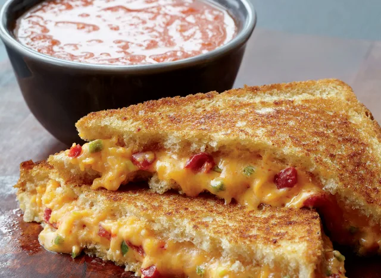

Recipe for Grilled Cheese and Tomato Soup

Grilled Cheese Sandwich
Required ingredients
- 11⁄4 cups finely shredded sharp Cheddar cheese
- 1 jar (4 oz) diced pimentos
- 1 jalapeño pepper, seeded and minced
- 1⁄4 cup finely sliced scallions
- 1⁄4 cup 2% Greek yogurt
- 1 Tbsp olive-oil mayonnaise
- Few shakes Tabasco
- 8 slices of bread
- Butter
How to make it
- Combine the cheese, pimentos, jalapeño, scallions,
yogurt, mayonnaise, and a few shakes of Tabasco in a mixing bowl.
- Divide among 4 slices of bread and top with the remaining slices.
- Heat a bit of butter in a cast-iron skillet or non- stick pan over medium heat.
- Cook the sandwiches, turning once, for about 10 minutes, until golden brown on both sides and the cheese is melted (have patience—an
extra minute or two means everything with good grilled cheese!).
Tomato Soup
Required Ingridients
- 3 lbs Roma tomatoes, halved lengthwise
- 2 Tbsp olive oil, plus more for drizzling
- 4 cloves garlic, peeled
- 3 cups low-sodium chicken stock
- Salt and black pepper to taste
How to make it
- Preheat the oven to 425°F. Place the
tomatoes cut side up on a baking sheet and drizzle with olive oil.
- Place the garlic cloves in the center of a sheet of
aluminum foil, drizzle with olive oil, and fold to create an enclosed packet.
- Roast the tomatoes and the garlic for about 40 minutes, until both are very soft.
- Transfer the tomatoes and garlic to a blender, add the olive oil, and purée.
- Transfer to a pot, stir in the chicken stock,
and simmer for 15 minutes. Season with salt and black pepper.